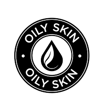

Knowing what skin type you have is the first step in looking after your skin.we at PureSkin understand it can be hard to
determine what skin type you have and how best to nourish the skin. Your skin needs to be looked after no matter what type of
skin you have. It is important to tailor your skincare to your skin type. There are various types of skin such as :M
oily, dry, combination and sensitive.
Dry Skin
Dry ski tends to lack of natural oils in the skins outer layer. Those who have dry skin, thier skin
produces less if its natural oil compard to other skin type. Dry skin is caused due to the lack of
moisture in the skin. The skin loses its moisture when it does not produce enough oil, which leads to dry skin.
characteristics of dry skin
Skin feels tight
Skin is sensitive and irritated
more appearance of fine lines
visiable pores

Oily Skin
The skin barrier produces sebum which is a sticky oily substance which helps to keep the skin moisturised.
Sebum prevents the skin from drying out and works well in lubricating the skin. Oily skin type tends to produce
excess sebum leading skin
being prone to acne.
characteristics of dry skin
blackheads and clogged pores.
shiny or greasy skin.
skin prone to acne
skin that looks thick
Combination Skin
Combination skin consists of oily and dry skin type. People with combination skin will tend
to have an oily T-zone through out the day. the T-zone is the forhead and the nose area.
And dry skin around the cheecks.
characteristics of combination skin
oily T-zone with shiny skin.
blackheads
normal to dry cheecks
Want to accomplish those skin goals and improve any imperfections ?
Take our 'improve my skin' quiz and tell us more about what it is you want
to achieve. whether it may be reducing the appearance of fine lines or
brightening those under eyes and vanishing those pimples. There is
something for everyone to achieve.